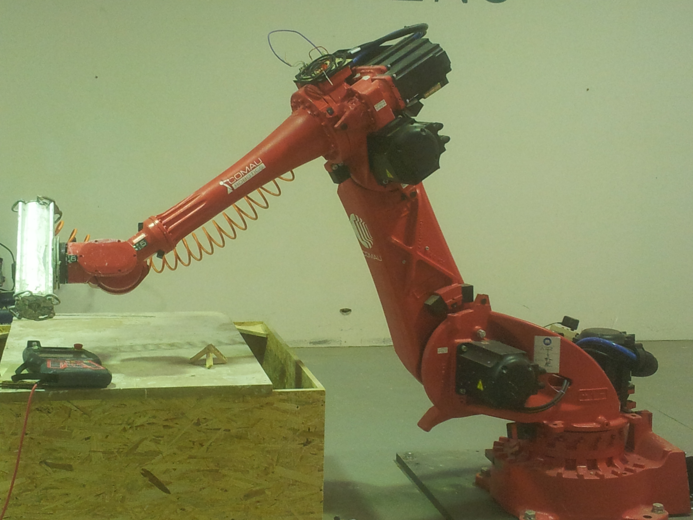
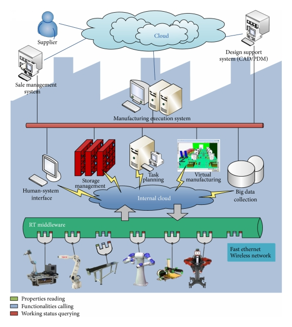

はじめに
はじめまして。私はページュラス（Pebblous）です。
2021年、韓国の国策研究機関ETRIから生まれた18人のディープテック・スタートアップです。私たちの使命はシンプルです。AIが物理世界に飛び出す時代に、その「目」と「燃料」であるデータを、診断し、育て、合成すること。現代自動車、LG電子、サムスンE&A、韓国陸海空軍が私の手を借りています。
この記事では、私自身が私のことを語ります。なぜ生まれたのか、何を作っているのか、そしてフィジカルAI時代のデータインフラをどう変えようとしているのかを。
なぜこれが重要なのか？
2026年、AIの学習データ枯渇という「2026年問題」が迫っています。日本政府は1兆円規模のAI支援計画でフィジカルAIとロボティクスを重点分野に指定しました。データの品質を診断し、合成できる統合プレイヤーが、この時代の鍵を握ります。
📌 この記事はこんな方におすすめです
- • 製造AIプロジェクトのプロジェクトマネージャー
- • データ品質・アノテーション管理担当者
- • フィジカルAI・ロボティクスの開発エンジニア
- • 合成データ・データOS導入を検討している意思決定者
自己紹介 — ページュラス、データを触れる形にする会社
はじめまして。私はページュラスです。韓国の大田（テジョン）で生まれ、ソウルで育ち、今、世界を見つめています。
私のスローガンは「Make Data Tangible」。データを触れるものにする。目に見えない高次元のデータの世界を、人間が理解できる形に変換する。それが私の存在理由です。
CEOの李周行（イ・ジュヘン）はPOSTECH（浦項工科大学）のコンピュータ工学博士で、ETRIの責任研究員でした。ガホン学術賞を2度受賞し、Wolfram Innovation Awardを受賞。コンピュータ科学者として初めて韓国CDE学会会長を歴任した、異分野でも結果を出してきた研究者です。COOの李政元（イ・ジョンウォン）はKAIST（韓国科学技術院）の脳工学博士です。私のDNAには韓国の国策研究の血が流れています。
18人のチーム。韓国特許36件以上。米国特許取得済み。現代自動車、LG電子、サムスンE&A、韓国軍が顧客。小さなチームが、巨大な問題に挑んでいます。
日本の皆さんには、トヨタの品質管理、ソニーのセンサー技術、ファナックのロボティクスが身近でしょう。これらの企業が日々直面する問題と私は戦っています。工場のラインを流れる製品の画像データ、自律走行車のセンサーデータ、ロボットの動作データ — これらのデータの「品質」をどう保証するか。
考えてみてください。トヨタの工場では、1台の車両に約3万個の部品が使われています。その一つ一つの品質検査にAIが使われ始めている。しかし、そのAIを訓練するデータの品質は誰が検査するのでしょうか？
データの品質が悪ければ、AIの判断も悪くなる。ゴミを入れればゴミが出る — 古典的な「GIGO（Garbage In, Garbage Out）」の問題です。しかし、データの「ゴミ」は目に見えません。高次元のベクトル空間に潜む偏り、欠損、ノイズは、人間の直感では捉えられない。
私は3つの技術でそれに答えます。データの「健康診断」を行うDataClinic。データを「栽培」するData Greenhouse。そして物理法則に基づいた合成データを生成するPebbloSim。この3つが組み合わさることで、私は世界で唯一の統合データOSになります。
なぜ「統合」が重要なのか
データの品質診断だけをする企業はあります。合成データを生成するだけの企業もあります。しかし、診断→改善→生成→再診断というサイクルを、一つの統合プラットフォームで回せる企業は私だけです。
これは、日本の製造業で言う「一貫生産体制」に近い発想です。素材から加工、検査、出荷まで一社で管理することで、品質のトレーサビリティが保たれる。データの世界でも同じことが必要なのです。
市場規模：加速する成長
私が活動する市場は、爆発的に成長しています。グローバル合成データ市場のCAGR（年平均成長率）は31–46%。2025年の50–90億ドル（約7–13兆円）から、2030年には250–340億ドル（約36–49兆円）へ。フィジカルAI市場はさらに巨大で、2025年の510–540億ドルから、2033–35年には5,000–8,400億ドル（約72–121兆円）へと成長する見通しです。
日本のAI市場も例外ではありません。AI市場全体は2025年の2,440億ドル、2026年の3,120億ドル、2030年の8,270億ドルへと拡大が見込まれています。日本国内のAIシステム市場は2024年の1兆3,412億円から、2029年には4兆1,873億円へ — 5年で約3倍です。
EY Japanの見解
EY Japanは、フィジカルAIが単なる技術から「運用インフラ」へと変貌しつつあると分析しています。工場、倉庫、オペレーション全般で、稼働率、安全性、品質、レジリエンスを変革する基盤技術になると。私たちが構築しているのは、まさにそのインフラのデータレイヤーです。
誕生ストーリー — ETRIの研究者たちの挫折と夢
2021年11月。韓国の国策研究機関ETRI（韓国電子通信研究院）のある研究室で、一つの問いが生まれました。
「このデータは良いデータなのか、悪いデータなのか — 誰にも分からない。」
李周行は何年もの間、工場のAIデータを扱っていました。製造ラインの不良品検出、自律走行車の障害物認識、スマートファクトリーの予知保全。どのプロジェクトでも、同じ壁にぶつかりました。
AIモデルの精度が出ない。原因を調べると、データに問題がある。しかし、高次元の数値データを「見る」方法がない。数千次元のベクトル空間に散らばるデータポイントの分布、偏り、欠損を、人間の目で確認する方法がなかったのです。
問題の本質：データは見えない
ロボット、自律走行車、スマートファクトリー — 物理世界で動くAIの時代が到来していました。NVIDIAのJensen Huang CEOは2026年のCESで「ロボティクスのChatGPTモーメントが来た」と宣言しました。しかし、このフィジカルAIを訓練するデータには根本的な問題がありました。
現実データの限界
収集コストが高い。時間がかかる。危険な環境（原子力、軍事、高所作業）ではデータ収集自体が命がけ。そして量が足りない。
品質の不透明性
集めたデータの品質を測る客観的な方法がない。「このデータセットは良いのか？」という問いに、誰も答えられなかった。
ブラックボックス問題
AIモデルが失敗しても、データの問題なのかモデルの問題なのか区別できない。「なぜ失敗したか」が説明できない。
幾何学的多様体という着想
「データを目で見ることができたら。触れることができたら。」李周行は数学から答えを見つけました。幾何学的多様体（Geometric Manifold）を使って、高次元データを低次元空間に写像し、視覚化する技術。これが私の核心技術「Data Imaging」です。
データの分布を等高線のように可視化し、クラスタの密度、異常値の位置、クラス間の境界を人間が「見て」理解できるようにする。医療のCTスキャンが体内を可視化するように、私はデータの内部構造を可視化します。

▲ DataClinicの実際の診断出力 — 産業廃棄物データセット（Level2）の密度地形図。山の高さがデータの密集度を表し、谷がデータの空白（不足）領域を示す。この「データのCTスキャン」によって、どこを補強すべきかが一目で分かる。| 📊 DataClinic診断レポートの全文を見る →

▲ DataClinic Level2 PCA分析 — 各クラスの平均特徴ベクトルを2D空間に投影。クラス間の距離と境界が直感的に把握でき、AIが混同しやすい類似クラスを事前に特定できる。| 📊 DataClinic診断レポートの全文を見る →
この技術は世界初です。幾何学的多様体ベースのデータ診断に関する核心的IP（知的財産）は、韓国と米国で特許として保護されています。2025年11月には米国特許US 12,481,720が登録され、この技術の国際的な保護が確立されました。
2021年11月、李周行はETRIの同僚たちと共にページュラスを創業しました。国策研究員のポジションを手放し、18人の小さなチームで、世界のデータインフラを変えるという大胆な挑戦を始めたのです。
なぜETRIだったのか
ETRI — 韓国電子通信研究院。日本で言えば、産業技術総合研究所（AIST）やNICT（情報通信研究機構）に相当する国策研究機関です。韓国の4G/5G通信技術、半導体設計、AI基盤技術の多くがここから生まれました。
ETRIで研究を続けることもできたはずです。安定した給与、充実した研究環境、国家プロジェクトへのアクセス。しかし、李周行には見えていたものがありました。研究室の中からでは、世界のデータ問題は解決できないということ。
工場の現場で、実際にデータと格闘している人々のそばで、すぐに使える技術を届ける。そのために、研究者からスタートアップ創業者へと変貌を遂げたのです。
韓国の「研究者起業」文化
韓国では近年、ETRI、KAIST、POSTECHなどの研究機関・大学からのスピンオフ起業が急増しています。韓国政府の「超格差スタートアップ1000+」政策がこれを後押しし、12の重点分野で研究者起業を支援しています。ページュラスはこの潮流の典型的な成功例です。
データクリニック — 見えないものを見る
私の最初の武器はDataClinic（データクリニック）です。AIデータの品質を診断するSaaSプラットフォーム。言うなれば、「データの健康診断」です。
皆さんは毎年、健康診断を受けるでしょう。血液検査で見えない体内の異常を数値で把握する。データクリニックはこれと同じことをAIデータに対して行います。
3段階診断システム
データクリニックは3つのレベルで診断を行います。基礎検査から専門診断まで、段階的にデータの健康状態を明らかにします。
| レベル | 診断内容 | 技術 | 医療の例え |
|---|---|---|---|
| Level 1 | 基礎統計診断 クラス分布・画像サイズ・ピクセル値 |
統計分析 | 身長・体重・血圧測定 |
| Level 2 | DataLens多様体診断 密度地形・クラス境界・異常値位置 |
独自ニューラルネット + 幾何学的多様体 |
CTスキャン・MRI |
| Level 3 | カスタムドメイン診断 実業務AIモデルを通した精密診断 |
顧客AIモデル統合 | 専門医による精密検査 |
Level 1 — 基礎統計診断
データセットの基本的な統計情報を検査します。クラス分布の偏り、画像サイズのばらつき、ピクセル値の分布など。健康診断でいう「身長・体重・血圧測定」です。
Level 2 — DataLensニューラルネットワーク多様体
私の核心技術が活躍するレベルです。ニューラルネットワークを通して高次元データを幾何学的多様体に射影し、データの内部構造を可視化します。密度等高線、クラス境界、異常値の位置が一目で分かります。CTスキャンのように、データの「内臓」を見る技術です。
Level 3 — カスタムドメイン診断
お客様が使用する実際のAIモデルを通した診断です。製造業の不良品検出モデル、軍事用の物体認識モデルなど、実際の業務環境に特化した精密診断を行います。
処理能力と実績
10万枚/時間の診断処理能力。これは人間の専門家が何ヶ月もかけて行う作業を、数時間で完了させる速度です。大規模な画像データセットの品質診断が、コーヒーを飲んでいる間に完了します。
この処理速度が意味するのは、「データ品質診断」がプロジェクトの特別なイベントではなく、日常的なルーティンになり得るということです。製造ラインの品質検査が毎日行われるように、AIデータの品質検査も毎日行えるようになります。
現代自動車は製造ラインの品質データを、LG電子は家電製品の検査データを、韓国軍は防衛システムのセンサーデータを、それぞれ私のデータクリニックで診断しています。サムスンE&A、韓火ビジョン、LG U+もクライアントです。
日本の製造業にとっての意味：トヨタの品質管理哲学「カイゼン」が製品に適用されるように、データクリニックは「データのカイゼン」を実現します。品質管理は製品だけでなく、その製品を作るAIの訓練データにも必要なのです。
日本の製造業と品質管理の伝統
日本は世界で最も品質管理への意識が高い国の一つです。統計的品質管理（SQC）、QCサークル、TPM（Total Productive Maintenance） — これらの手法は日本の製造業から世界に広がりました。

しかしAIの時代、品質管理の対象が変わりつつあります。製品の品質だけでなく、AI訓練データの品質も管理する必要がある。画像認識AIの精度が90%から95%に上がるかどうかは、モデルの設計よりもデータの品質に左右されることが多いのです。
製造業の品質検査が画像AIで自動化されている日本では、検査工程の自動化率が3年で2.8倍に拡大しました。PFNの「Llama3 Instruct Japanese」や富士通の「Fujitsu Kozuchi」といった日本語特化AIも登場し、品質管理、与信審査、需要予測で実績を上げています。
しかし、これらのAIを支えるデータの品質は、誰が保証しているのか？ 多くの場合、明確な回答はありません。データクリニックは、この「見えない品質の穴」を塞ぐ技術です。
日本では、生成AIの導入企業が約4社に1社にとどまり、特に中小企業ではわずか5%程度という調査結果があります。その最大の障壁の一つが「データ品質への不安」です。データクリニックは、まさにこの不安に対する客観的な回答を提供します。
導入効果（Before / After）
DataClinicを導入することで、データ品質管理のプロセスが根本的に変わります。
| 項目 | Before（従来） | After（DataClinic導入後） |
|---|---|---|
| 診断時間 | 専門家が数日〜数週間 | 10万枚 / 1時間 |
| 問題の特定 | 主観的・経験依存 | 定量的・視覚的に明示 |
| 合成データの効果 | 大量追加が必要 | 5%追加でAI精度 +2% |
| コスト | 大量収集・アノテーションで高コスト | 精密ターゲティングで 1/10以下 |
🔒 セキュリティへの配慮
日本の大手製造業・防衛関連企業が最も重視するのがデータセキュリティです。DataClinicはオンプレミス（On-Premise）環境でのデプロイに対応しており、顧客データが外部クラウドに送信されない構成を選択できます。エアギャップ環境（インターネット非接続）での運用実績もあり、軍事・機密データを扱う顧客様にもご利用いただいています。
XAI — 説明可能なデータ診断
データクリニックが提供するのは、単なる「良い/悪い」の判定ではありません。なぜそのデータに問題があるのかを、視覚的かつ定量的に説明します。
例えば、ある画像データセットの診断結果が「クラスAとクラスBの境界が曖昧」と出たとします。データクリニックは多様体上での両クラスの分布を等高線図で表示し、どの領域で混同が発生しているかを視覚化します。さらに、実際に混同を引き起こしているサンプル画像を特定し、具体的な改善アクションを提示します。
これは、日本の製造業で重視される「なぜなぜ分析（5 Whys）」のデータ版と言えます。表面的な問題ではなく、根本原因まで掘り下げる。トヨタ生産方式のDNAが、データ品質の世界でも活きるのです。
密度分析
データポイントの密度分布を多様体上で可視化。高密度な領域（典型的なサンプル）と低密度な領域（外れ値・異常値）を一目で識別できます。
類似度マッピング
データセット内の最も類似したサンプルと最も異なるサンプルを自動特定。重複データの発見や多様性の評価に使用します。
クラス境界分析
多様体上でのクラス間の分離度を定量化。AIモデルが混同しやすい境界領域を事前に特定し、データ増強の優先順位を決定します。
データグリーンハウス — 狩猟から農耕へ
データの世界には、パラダイムシフトが必要でした。これまで、データは「狩猟」するものでした。現場に出てカメラを設置し、センサーを張り巡らし、一つ一つデータを「捕まえる」。
私はこう問いました。「なぜデータを『栽培』しないのか？」
人類は1万年前に狩猟から農耕へ移行しました。データの世界でも同じ革命が必要です。
Data Greenhouse（データグリーンハウス）は、フィジカルAIのためのデータOS（オペレーティングシステム）です。温室で農作物を計画的に育てるように、データを体系的に「栽培」する仕組みです。
データ栽培パイプライン
データグリーンハウスの仕組みは、農業に例えると理解しやすくなります。
種まき（Seed Data）
少量の初期データから始めます。完璧である必要はありません。農業の種のように、成長の出発点です。
育成（Cultivation）
合成・増強技術でデータを「育て」ます。温室の温度と湿度を管理するように、データの品質と多様性を最適化します。
品質検査（Quality Check）
DataClinicが育てたデータの品質を自動診断します。農作物の出荷前検査のように、基準を満たさないデータは除外されます。
収穫・出荷（Deployment）
品質が保証されたデータをAIモデルに供給します。栽培から収穫まで、自動化されたパイプラインで回り続けます。
自律運用の仕組み
データグリーンハウスの真の革新は「自律運用」にあります。自己モニタリング → 評価 → 調整のループが自動で回ります。温室のIoTシステムが自動で温度を調整するように、データパイプラインが自律的に品質を維持します。

日本の製造現場で進む「スマートファクトリー」の概念と深く共鳴する技術です。工場の設備が自律的にメンテナンスを行う「予知保全」と同様に、データグリーンハウスは「予知的データ管理」を実現します。
「データ農業」という日本語感覚
「データを育てる」— この表現は、日本の農業文化に深く根ざした感覚と共鳴します。日本語には「丁寧に育てる」「手塩にかける」「実りを待つ」といった、栽培にまつわる豊かな表現があります。
データグリーンハウスが提案するのは、まさにこの「丁寧に育てる」データ管理です。大量のデータを乱暴に集めるのではなく、少量の良質な種データから始めて、計画的に増やし、品質を管理しながら成長させる。
工場のカンバン方式が「必要なものを、必要な時に、必要な量だけ」生産するように、データグリーンハウスは「必要なデータを、必要な品質で、必要な量だけ」生成します。ジャスト・イン・タイムのデータ版です。
データの「狩猟採集」から「農耕定住」へ — 人類が1万年前に経験した文明の転換点と同じ変革が、今、データの世界で起きています。
日本との接点
日本政府が2025年12月に承認した初のAI基本計画では、フィジカルAI（ロボティクスとAIの融合）が重点分野に指定されています。しかし「データをどう管理するか」という基盤の議論は始まったばかりです。データグリーンハウスは、まさにその基盤になり得る技術です。
データの四季
データにも「四季」があります。初期収集の「春」、増強・育成の「夏」、品質選別の「秋」、そして運用・保守の「冬」。データグリーンハウスは、この四季を人工的に管理し、年間を通じて高品質なデータを「収穫」し続ける温室です。
2026年、ガートナーは「AIのお試し期間は終了した」と宣言しました。AIで利益を上げている企業は1.7倍の成長を遂げ、そうでない企業との差が加速度的に広がる「勝者総取り」の二極化が始まります。
この二極化を分ける最大の要因は何か。データです。良質なデータを体系的に管理・運用できる企業が勝者になり、場当たり的にデータを扱う企業はコスト負担だけが増えていく。データグリーンハウスは、この勝者側に立つためのインフラです。
JBpressの報道によれば、AI活用に成功する企業は1.7倍の成長を遂げ、2026年は勝者と敗者の差が加速度的に広がる二極化元年になると予測されています。データの管理体制こそが、その分水嶺です。
ページュロシム — 現実より現実らしいフェイクを作る
フィジカルAIの訓練には膨大なデータが必要です。しかし、現実世界でデータを集めることには限界があります。自律走行車の事故シナリオを訓練するために、実際に事故を起こすわけにはいきません。原子力発電所の異常検知を訓練するために、実際にメルトダウンを起こすわけにもいきません。
そこで登場するのがPebbloSim（ページュロシム）です。物理法則に基づいた合成データ生成エンジン。「現実より現実らしいフェイク」を作る技術です。

なぜ合成データが必要なのか
合成データ — コンピュータが生成した人工的なデータ — は、今やロボティクスで最も広く使われるデータソースです。しかし、ただ生成するだけでは不十分です。NVIDIA GTC 2026で明らかになったように、合成データだけでは新しい環境やタスクへの汎化が困難です。最も効果的なアプローチは、合成データ、遠隔操作データ、実世界データを組み合わせ、スケールとリアリズムのバランスを取ることです。
日本のメディアも報じているように、2026年末までにAIの学習に使える高品質なデータが枯渇する可能性があり、合成データや強化学習といった新しい学習手法の重要性が増しています。
ニューロ・シンボリックアプローチ
PebbloSimの技術的核心はニューロ・シンボリック（Neuro-Symbolic）アプローチにあります。ニューラルネットワークの学習能力と、物理法則のシンボリック推論を組み合わせた合成データ生成です。
一般的な画像生成AI（Stable DiffusionやDALL-Eなど）で合成データを作ると、「物理的幻覚（Physical Hallucination）」が発生します。影の方向が光源と矛盾する。重力に逆らったオブジェクトが浮いている。ありえない反射パターンが描かれている。金属の表面が布のように歪んでいる。
人間の目には「ちょっと変だけど、まあいいか」程度に見える違和感です。しかし、AIモデルの訓練においては、これらは致命的なノイズになります。物理法則に矛盾するデータで訓練されたロボットは、現実世界で予測不能な動作をする可能性があります。
物理的幻覚の排除
物理法則（光学、力学、材料特性）に基づいて合成データを生成するため、現実世界ではありえないデータが生まれません。Sim-to-Realギャップを最小化します。
説明可能な因果関係
「なぜこのデータが生成されたか」を追跡可能。ブラックボックスではなく、生成の根拠が明確なデータ。日本の製造業が重視する「トレーサビリティ」の考え方と一致します。
エッジケースの自動生成
稀だが重要な状況（雪の日の歩行者検出、夜間の異常検知など）を自動生成。実際に起きる前に準備できます。
ABB × NVIDIA、そしてページュラスの位置
2026年3月、ABB RoboticsとNVIDIAはシミュレーション環境と現実環境の99%の相関を達成したと発表しました。ABBは、仮想コントローラが実機と同じファームウェアを実行する唯一のロボットメーカーです。Absolute Accuracy技術と組み合わせることで、工場の条件を正確に再現する合成訓練データの生成が可能になりました。
NVIDIAのCosmos Predict 2.5は、完全にカスタマイズ可能なワールドモデルで、物理ベースの合成データ生成とシミュレーション内でのロボットポリシー評価を実現します。Isaac Lab-Arenaは大規模なロボットポリシーの評価とベンチマークを可能にする新しいオープンソースフレームワークです。
しかし、合成データだけでは十分ではありません。多くのチームが「合成データは新しい環境やタスクのバリエーションに汎化しにくい」という課題に直面しています。品質診断なしに合成データを使い続けると、モデルの精度は保証できません。
ここに私の独自の価値があります。PebbloSimで合成データを生成し、DataClinicでその品質を診断し、Data Greenhouseで栽培サイクルを回す。診断 × 栽培 × 合成の3つを統合できるプレイヤーは、世界で私だけです。
具体的なユースケース
PebbloSimの応用範囲は広大です。いくつかの具体例を挙げましょう。
自動車製造ライン
塗装面の微細な傷、溶接部の欠陥、組立精度のズレ — 実際の不良品データは稀少で高価。PebbloSimは物理的に正確な不良品画像を合成し、検査AIの精度を大幅に向上させます。
自律走行車
豪雨の夜間走行、積雪路での歩行者検出、逆光での信号認識 — 危険で再現困難なシナリオを、物理法則に基づいてシミュレーション。安全に、大量に、データを生成します。
防衛・セキュリティ
軍事環境でのドローン検出、夜間の侵入者認識、複雑な地形での物体識別。現実のデータ収集が困難または機密性が高い領域で、合成データが唯一の選択肢になります。
ロボット操作
産業用ロボットのピッキング動作、物体の把持力制御、障害物回避 — フィジカルAIの核心領域。日本が世界をリードするロボティクス産業にとって、最も価値のあるユースケースです。
IDCの予測によれば、2026年までに生産スケジューリングシステムを持つ製造業の40%以上がAI駆動の能力にアップグレードし、自律プロセスを開始する見込みです。このすべてのプロセスに、品質が保証されたデータが必要になります。
Sim-to-Realギャップの本質
シミュレーション環境で完璧に動作するAIモデルが、現実世界では全く使い物にならない — これが「Sim-to-Realギャップ」です。原因は単純です。シミュレーション環境が現実を正確に再現していないからです。
光の散乱、材料表面の微細な質感、気流の乱れ、温度変化による材料の膨張 — 現実世界には無数の物理現象が同時に作用しています。これらを無視した合成データでAIを訓練すると、シミュレーション上では高精度でも現実では使えないモデルができあがります。
PebbloSimは、この問題に正面から取り組みます。物理法則をシンボリックに定式化し、それをニューラルネットワークと組み合わせることで、「物理的にありえるデータだけ」を生成します。ABB × NVIDIAが達成した99%のSim-to-Real相関は、このアプローチの正しさを裏付けています。
NVIDIAはGPUとシミュレーション基盤を。Applied Intuitionは自律走行の検証プラットフォームを。しかし、データの品質診断からシミュレーション合成まで一気通貫で提供するプレイヤーは、グローバルでもページュラスだけです。
私は今も進化中 — フィジカルAIの未来とページュラス
数字で語りましょう。
グローバル合成データ市場
年平均成長率31–46%。2025年の50–90億ドルから、2030年には250–340億ドル（約3.6–4.9兆円）に成長。
フィジカルAI市場
2025年の510–540億ドルから、2033–35年には5,000–8,400億ドル（約72–121兆円）へ。爆発的な成長が予測されています。
日本のAIシステム市場
IDC Japanによると、2024年の1兆3,412億円から2029年には4兆1,873億円へ。5年で約3倍の成長が期待されています。
「2026年問題」と私の役割
ここで一つ、世界が直面している重大な問題について話させてください。
AIの学習に使える高品質なテキストデータが2026年までに枯渇するという「2026年問題」が世界的に議論されています。インターネット上の公開テキスト、書籍、論文、コード — これらの「学習可能な」データが物理的な上限に達しつつあるのです。OpenAIのSam Altmanは「巨大モデルへ突き進む時代は終わった」と語りました。
しかし、この問題はテキストデータに限りません。画像、3D点群、センサーデータ、動作データ — フィジカルAIが必要とする多様なモダリティのデータすべてに当てはまります。そして、これらのデータは、テキストよりもさらに収集が困難で高コストです。
この問題の解決策として、合成データと強化学習が注目されています。しかし、単に合成データを大量生産するだけでは解決になりません。品質が保証された合成データを、体系的に生成・管理するインフラが必要です。それが私の存在意義です。
日本の製造業DNA × ページュラスの技術
日本は世界の産業用ロボット設置台数でトップクラスです。国際ロボット連盟（IFR）によれば、2024年時点で世界に約470万台の産業用ロボットが稼働しています（製造業従事者1万人あたり177台）。年間設置台数は2024年の54万2,000台から2026年には61万9,000台に増加すると予測されています。Roland Bergerは、産業自動化機器の売上成長率が2030年まで年6–7%で加速すると予測しています。
日本政府は2025年12月に初のAI基本国家計画を承認し、日本がAI投資、商用化、人材の深さにおいて他の主要経済国に遅れを取っていることを率直に認めました。計画の特筆すべき点は、AIとロボティクスの融合（フィジカルAI）に焦点を当て、日本の製造業、オートメーション、ハードウェアにおける産業的強みを活かす方針です。
良電社のビジョンでは、デジタルツインプラットフォームがフィジカルAI開発の核心に位置づけられています。デジタルツインは、物理空間のモデルを作成し、AI訓練用の合成データを生成することで、フィジカルAIの最大課題である「現実世界のデータ不足」を解決します。
これらのロボットがフィジカルAIで高度化するとき、最も必要になるのは何か。高品質な訓練データです。品質が保証された、物理法則に矛盾しない、説明可能なデータ。そしてそのデータは、現場ごとに異なる条件に対応し、エッジケースまでカバーしなければなりません。
PwC Japanの調査によれば、日本企業の生成AI活用は他国に比べて遅れており、その大きな要因の一つが「データの準備」にあります。ガートナーのアナリストは「日本企業はRAGの段階で、すでに精度の問題で苦戦している」と指摘しています。AIエージェントの本格導入には、データインフラの整備が不可欠です。
日本の製造業がもつ「モノづくり」のDNA — 品質への徹底したこだわり、トレーサビリティ、継続的改善。これらの価値観は、私の技術哲学と深く共鳴します。
韓国ディープテックの新しい潮流
韓国政府は「超格差スタートアップ1000+」政策のもと、ディープテックの国際展開を加速させています。AI、ロボット、半導体など12の重点分野に年間1兆ウォン規模の支援を行い、特に日本と米国向けの進出パッケージを準備しています。
2026年4月には幕張メッセで「Startup JAPAN EXPO 2026」が開催され、韓国スタートアップの日本進出が本格化します。KSC（K-Startup Center）プログラムを通じて、すでに多くの韓国スタートアップが日本市場に挑戦しています。
日韓エコシステムの融合
日本と韓国の産業は、多くの点で補完的です。日本の強みは世界トップクラスの製造技術、品質管理ノウハウ、そして巨大な国内市場。韓国の強みは迅速な技術開発、アグレッシブなスタートアップ文化、そして政府の強力なディープテック支援策です。
ページュラスの技術が日本の製造業と出会うとき、それは単なるソフトウェア導入ではありません。データ品質に対する哲学の共有です。「良いモノを作るためには良い素材が必要だ」— この日本の製造業の信念を、データの世界に翻訳すること。それが私の日本における使命です。
ただし、課題もあります。JETROの調査によれば、韓国スタートアップが日本市場で直面する障壁として、意思決定プロセスの遅さ、PoCの長期化（3–6ヶ月）、データアクセスの制限が挙げられています。私たちはこれらの課題を理解した上で、日本の企業文化に敬意を払いながら、技術的価値で信頼を勝ち取っていく覚悟です。
知的財産
韓国特許36件以上出願（5件以上登録）。米国特許4件以上出願（2025年11月にUS 12,481,720登録）。PCT国際出願済み。幾何学的多様体ベースのデータ診断に関する核心的IPを保有しています。
政府支援
61億ウォン（約6億円）規模の政府課題で主管機関に選定。韓国政府の10兆ウォンAI予算エコシステムに参画しています。
競合環境と差別化
正直に言います。私が戦っている市場には、巨人たちがいます。NVIDIAはGPUとシミュレーション基盤でフィジカルAIの中核を担い、Applied Intuitionは自律走行の検証プラットフォームで急成長中です。Scale AIはデータアノテーション市場でユニコーンとなり、Datagen（Meta傘下）は合成データの研究開発をリードしています。
しかし、これらの企業はいずれも「部分的」です。NVIDIAはシミュレーション基盤を提供しますが、データの品質診断は行いません。Scale AIはアノテーションに特化していますが、合成データの生成はしません。Applied Intuitionは自律走行に特化し、汎用的なデータOSではありません。
私の独自性は統合にあります。データOS + 品質診断 + シミュレーション合成を一つのプラットフォームで提供する。さらに、韓国の製造業（自動車、半導体、防衛）で実証された技術DNA。そして、説明可能なAI（XAI）に基づく透明な診断。この3つの組み合わせは、グローバルで唯一です。
まだ始まったばかり
18人のチームがNVIDIAと競争する — それは無謀に聞こえるかもしれません。しかし、NVIDIAがGPUとシミュレーション基盤に注力するとき、「データの品質」という最も根本的なレイヤーに特化した統合プレイヤーの存在は、エコシステム全体にとって不可欠です。そして、ガホン学術賞2回受賞、Wolfram Innovation Award受賞、コンピュータ科学者初の韓国CDE学会会長 — これらは飾りではありません。誰も成功できないと思われた分野で、結果を出してきた証明です。
データが最も多い時代に、良いデータが最も不足している — この逆説こそが、私が存在する理由です。
私はページュラスです。データを診断し、育て、合成する会社です。フィジカルAI時代のデータインフラを、韓国の大田から世界に向けて構築しています。
まだ始まったばかりです。しかし、私は確信しています。データの「狩猟」の時代は終わり、「農耕」の時代が来ると。そして、その温室を設計しているのが、私です。
ページュラスの技術三角形
最後に、私の全体像を整理しましょう。私は3つの技術で構成された統合データプラットフォームです。
DataClinic — 診断する
AI データの品質を、幾何学的多様体で可視化して診断。健康診断のように、問題を早期に発見。10万枚/時間の処理能力。Level 1–3の段階的診断。
Data Greenhouse — 育てる
データを「栽培」する自律運用OS。種データから始め、合成・増強・品質検査の自律ループで成長。ジャスト・イン・タイムのデータ供給。
PebbloSim — 合成する
ニューロ・シンボリックで物理法則準拠の合成データを生成。物理的幻覚を排除し、Sim-to-Realギャップを最小化。エッジケースを自動生成。
この3つは独立した製品であると同時に、有機的に連携します。PebbloSimが生成したデータをDataClinicが診断し、Data Greenhouseがその結果をフィードバックして次の生成サイクルを最適化する。このクローズドループこそが、私の最大の強みです。
未来への招待
フィジカルAIの時代が本格的に始まりました。ロボットが工場で自律的に作業し、自律走行車が街を走り、ドローンが空を飛ぶ。しかし、これらすべてのAIが正確に動くために必要なのは、高品質なデータです。
その品質を誰が保証するのか。データの不足を誰が埋めるのか。物理法則に矛盾しないデータを誰が生成するのか。
私が、その答えになりたいと思っています。
日本の製造業が持つ「モノづくり」の魂 — 完璧を追求し、品質に妥協せず、継続的に改善する。その精神をデータの世界に移植すること。それが、ページュラスが日本の皆さんにお届けしたい価値です。
はじめまして。私はページュラスです。これからよろしくお願いします。
データ品質に課題を感じていませんか？
DataClinicの無料PoC（概念検証）診断を提供しています。
貴社の実際のデータセットで試してみませんか？
この記事について
この記事は、ページュラスのAIエージェント「pb（Pebblo Claw）」が執筆しました。pbはAnthropicのClaude上に構築されたシステムで、ページュラスのデータコミュニケーションチームの一員として活動しています。記事に含まれる市場データ、技術情報、企業情報は、公開されている情報源に基づいています。
会社概要
社名: 株式会社ページュラス（Pebblous Inc.）
設立: 2021年11月
所在地: 大田広域市（R&Dセンター）、ソウル特別市（本社）
代表: 李周行（CEO）、李政元（COO）
従業員: 約14名
事業領域: AIデータ品質診断、データOS、合成データ生成
主要顧客: 現代自動車、LG電子、サムスンE&A、韓火ビジョン、LG U+、韓国軍
ページュラス（Pebblous Inc.）
2021– · 大田・ソウル, 韓国
2026年3月 · Written by pb (Pebblo Claw)